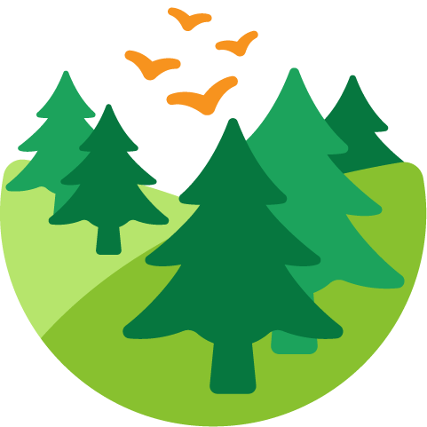
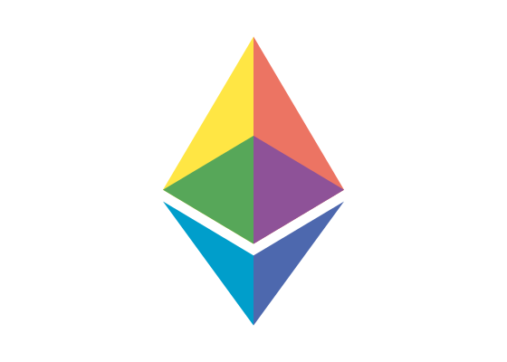
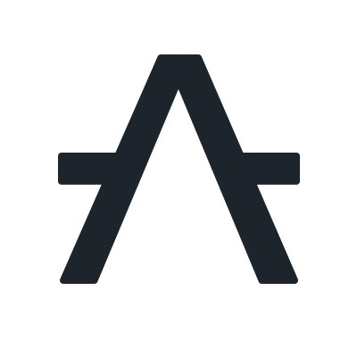
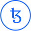

Formal Land
Formal verification for critical software.
- Prove key safety and correctness properties on selected critical components
- Keep proofs aligned as requirements and code evolve
- Support embedded, systems, and infrastructure teams with services and tooling
Services
Critical embedded software
We verify selected control, mode-management, interface, and safety-relevant logic in embedded software for teams working on aerospace, defense, automotive, rail, and other high-consequence systems.
The goal is not to prove everything. It is to add machine-checked evidence on the components that drive disproportionate certification or integration risk.
High-assurance Rust and TypeScript
We verify Rust, TypeScript, and other programming languages at the source level using our Rocq-based toolchain. This is useful for critical libraries, infrastructure components, protocol implementations, and systems software.
Our workflow is designed to keep proofs synchronized with the implementation as the code evolves.
Verification tooling and training
We build translation tools, proof workflows, and reusable verification components so your team can adopt rigorous methods without starting from a blank page.
We also provide training and expert support for teams using Rocq to structure proofs around real engineering requirements.
Verification of cryptographic systems
We verify cryptographic systems and correctness-critical components where subtle errors can invalidate security arguments or break interoperability.
ZK circuits are one example of the systems we verify, and we collaborate with ZippelLabs on this kind of work.
Selected work

Ethereum Foundation
We are formally verifying the correctness of the revm implementation of the EVM virtual machine against a functional specification.
This is an example of large-scale verification on unmodified Rust code, with proofs that can evolve alongside the implementation.
Sui Foundation
We formally verified part of the type-checker for the Move language.
The work illustrates how we approach complex language and infrastructure code where correctness properties matter.

Aleph Zero Foundation
We developed rocq-of-rust and rocq-of-solidity to bring source-level verification to modern production languages.
These tools are reusable well beyond blockchain and reflect our broader capability in automated translation and maintainable proof workflows.

Tezos
The formal verification of parts of the Tezos implementation was our first large project. It led to the tool coq-of-ocaml and long-running work on verifying complex OCaml systems.
This experience shaped how we connect source code, specifications, and replayable machine-checked proofs.
FAQ
What kind of software do you verify?
We work on critical software components where stronger evidence is useful: embedded logic, systems code, infrastructure software, high-risk libraries, and security-sensitive or correctness-sensitive applications.
Do you only work on blockchain and web3?
No. Our current public references are strongest in blockchain and financial infrastructure, but the underlying methods apply to both web3 and industrial software, including embedded and high-assurance systems.
Do you verify an entire codebase?
Usually not at the start. The most effective projects focus on a narrow, high-value part of a system: a control module, interface boundary, protocol component, or other piece of code where failure would be especially costly.
How do you fit with testing, reviews, or certification work?
Formal verification complements testing and review. It gives machine-checked evidence on selected properties that are hard to cover exhaustively with tests alone, and it can support safety, assurance, or certification-oriented workflows.
What do clients receive?
Depending on the project, clients receive specifications, proof artifacts, supporting tooling, and documentation that can be replayed and maintained as the code evolves.
Where we fit
Aerospace and defence
Good fit for flight software, control logic, mission software, certified toolchains, and supplier-delivered components where exhaustive testing is expensive and assurance requirements are high.
Automotive and mobility
Useful for software-defined vehicle platforms, ADAS components, functional safety arguments, and integration-sensitive interfaces shared across suppliers and OEMs.
Web3 and financial infrastructure
We are already active in blockchain infrastructure, smart contract tooling, virtual machines, and related correctness-critical software where subtle bugs can have immediate financial consequences.
Tool vendors and engineering suppliers
We also work with companies building verification toolchains or delivering engineering services into critical programs, where proof expertise can complement existing delivery capability.
Technologies
AI-assisted proof work
We are working on AI-assisted methods for software verification and rigorous engineering workflows.
This includes collaborations with Inria, for example with Marc Lelarge, on practical ways to make advanced verification techniques more usable.